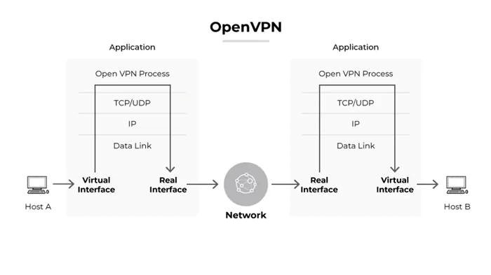
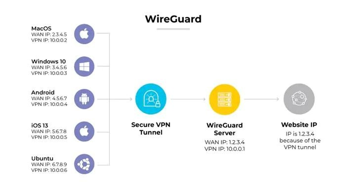
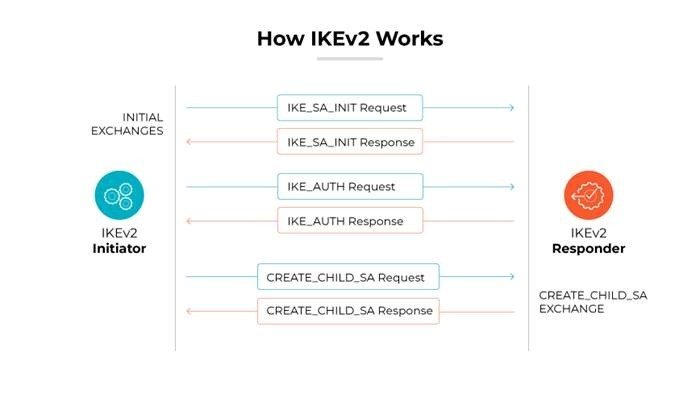

3.1. Nguyên lý hoạt động của VPN
VPN hoạt động dựa trên ba khái niệm chính: tunnel (đường hầm), mã hóa dữ liệu và xác thực.
-
Tunnel là kết nối ảo mà VPN tạo ra trên mạng công cộng, trong đó các gói tin từ mạng con (ví dụ mạng LAN) được bao đóng (encapsulate) vào một giao thức khác để truyền an toàn qua Internet.
Ví dụ, trong IPSec tunnel mode, mỗi gói IP gốc được đóng gói vào một “IP vỏ ngoài” kèm theo header của IPSec (ESP hoặc AH), rồi cuối cùng được giải mã ở đầu nhận.
-
Kỹ thuật mã hóa đảm bảo tính bí mật dữ liệu: thuật toán như AES (128-bit hoặc 256-bit) là lựa chọn phổ biến nhờ sức mạnh và hiệu năng tốt, hoặc ChaCha20 được thiết kế cho hiệu năng cao trên thiết bị di động.
Để đảm bảo tính toàn vẹn và chống giả mạo, HMAC (ví dụ HMAC-SHA1/256/512) thường được dùng nhằm tạo kiểm tra tính hợp lệ của gói.
-
Cuối cùng,xác thực bảo đảm chỉ các bên hợp lệ mới thiết lập kênh VPN. Thông thường, giữa client và server VPN sẽ dùng chứng chỉ số X.509 hoặc khóa PSK để xác thực lẫn nhau; trong doanh nghiệp còn kết hợp đa yếu tố (MFA) để tăng cường bảo mật.

Hình ảnh minh họa quá trình dữ liệu khi sử dụng VPN (ví dụ OpenVPN): các gói tin từ Host A (góc trái) được xử lý qua giao diện ảo, bị mã hóa và gửi qua mạng (màu đỏ) tới mạng nội bộ của Host B, nơi chúng được giải mã và tiếp tục đến đích cuối.
Mọi dữ liệu chuyền qua “đường hầm” này đều không thể đọc được bởi bên thứ ba nếu thiếu khóa mã hóa. Ví dụ, giao thức OpenVPN sử dụng TLS để tạo phiên bảo mật, sau đó sử dụng AES hoặc ChaCha20 cho mã hóa dữ liệu.
VPN tích hợp ở các tầng khác nhau của mô hình OSI: IPSec hoạt động ở tầng 3 (Network) nên mã hóa mọi gói IP (dịch vụ “giải pháp mạng riêng cho toàn bộ lưu lượng”); trong khi SSL/TLS VPN như OpenVPN hay SSTP hoạt động ở tầng ứng dụng (Layer 7),
thường chỉ bảo vệ lưu lượng của các ứng dụng cụ thể hoặc giao diện ảo tạo địa chỉ IP riêng cho user. Do đó IPSec thích hợp để kết nối toàn bộ mạng (site-to-site), còn SSL/TLS VPN thích hợp cho truy cập từ xa cá nhân và granular control ứng dụng.
Chẳng hạn, IPSec thường thiết lập kênh peer-to-peer giữa hai gateway, cho phép hai mạng LAN khác nhau liên lạc mật mã với nhau; ngược lại SSL VPN cung cấp truy cập an toàn từng phần (thông qua portal web hoặc ứng dụng chuyên dụng) mà không cần cài phần mềm VPN đầy đủ.
Sự khác biệt này được thể hiện trong bảng so sánh ở trên: VPN site-to-site thường yêu cầu cấu hình một lần trên router/gateway ở mỗi văn phòng, còn VPN remote-access yêu cầu mỗi người dùng cấu hình phần mềm khách trên máy họ.

Hình minh họa cách VPN (WireGuard) ẩn địa chỉ IP người dùng: thiết bị (trái) kết nối qua một đường hầm VPN an toàn (dấu gạch đứt) tới máy chủ VPN, sau đó tới Internet.
Trong ví dụ này, địa chỉ IP công cộng của trang web (10.0.0.1) chỉ “nhìn thấy” IP ẩn của máy chủ VPN (hoặc IP VPN của thiết bị), trong khi IP thật của thiết bị gốc (Mac/Windows/Android/iOS/Ubuntu) bị che giấu.
Tóm lại, VPN bảo vệ tính riêng tư bằng cách mã hóa dữ liệu và ẩn thông tin định tuyến gốc.
3.2. Quy trình hoạt động của VPN
Quá trình khởi tạo kết nối VPN thường gồm các bước tuần tự như sau:
- Bước 1. Khởi tạo kết nối: Người dùng chạy phần mềm VPN client và khởi tạo kết nối đến máy chủ VPN. Trên mạng công cộng, gói mở kết nối này được gửi đến địa chỉ máy chủ VPN (qua cổng định danh, ví dụ 1194 UDP cho OpenVPN, 443 TCP cho SSL, 500/4500 UDP cho IPSec).
- Bước 2. Xác thực đầu cuối: VPN client và server thực hiện xác thực lẫn nhau. Tùy cấu hình, client có thể đăng nhập bằng tài khoản/mật khẩu hoặc sử dụng chứng chỉ số.
Giao thức xác thực có thể dựa trên TLS (OpenVPN), IKE (IPSec), hoặc chia sẻ khóa PSK. Ví dụ, OpenVPN dùng TLS với chứng chỉ X.509, còn IPSec dùng IKEv2 với chứng chỉ hoặc khóa bí mật chia sẻ (Pre-Shared Key).
- Bước 3. Thiết lập kênh an toàn (handshake): Hai bên trao đổi khóa mã hóa và các tham số bảo mật. Trong IPSec, IKEv2 thực hiện quy trình hai giai đoạn (Main Mode/Quick Mode) để trao đổi Nonce,
DH và thiết lập Security Association; trong OpenVPN/SSL, diễn ra TLS handshake gồm ClientHello, ServerHello, Trao đổi Chứng chỉ, và Khóa Tiên đề (Pre-master secret). Kết quả là hai bên thống nhất một khóa phiên (session key) dùng cho mã hóa luồng dữ liệu. Đặc biệt,
nhiều giao thức hỗ trợ Perfect Forward Secrecy (PFS) bằng cách sinh khóa mới cho từng phiên, nên dù khóa dài hạn bị lộ cũng không giải mã được dữ liệu trước đó.

Hình minh họa quy trình trao đổi khóa IKEv2: gói tin IKE_SA_INIT và IKE_AUTH được gửi qua lại giữa client (initiator) và server (responder) để thỏa thuận thuật toán mã hóa, xác thực nhau và tạo ra khóa chung. Sau khi handshake hoàn tất, kênh ESP/IPSec an toàn (sau đó) sẽ được thiết lập để truyền dữ liệu mã hóa.
IPsec thường dùng UDP 500 cho IKE, và UDP 4500 cho NAT-T nếu cần.
- Mã hóa dữ liệu: Sau khi đường hầm được thiết lập, mọi gói IP từ client sẽ được mã hóa và đóng gói vào đường hầm VPN. Ví dụ, với IPSec/ESP, gói IP gốc được đưa vào payload của ESP và thêm phần Trailer HMAC; với OpenVPN,
dữ liệu ứng dụng được đóng gói trong bản ghi TLS và mã hóa (ví dụ AES-GCM hoặc ChaCha20-Poly1305).
- Truyền Internet: Các gói mã hóa qua lại qua Internet công cộng giữa client và server. Dù bị tấn công thu thập, nội dung gói vẫn an toàn nhờ mã hóa, chỉ có thể biết được kích thước và thời gian (metadata).
- Giải mã tại VPN server: Máy chủ VPN nhận các gói mã hóa, giải mã chúng nhờ khóa phiên đã thỏa thuận, rồi chuyển tiếp dữ liệu đến đích nội bộ (ví dụ máy chủ nội bộ hoặc Internet ngoài). Máy chủ có thể áp dụng chính sách truy cập, định tuyến, hay kiểm soát truy nhập.
- Trả kết quả về: Khi đích trả dữ liệu cho server, VPN server mã hóa trả lời bằng kênh VPN trở lại cho client, nơi client giải mã và trao kết quả về ứng dụng. Quá trình đối xứng.
Các bước trên được áp dụng tương tự ở cả giao thức IPSec, OpenVPN, WireGuard hay SSL/TLS, chỉ khác ở chi tiết kỹ thuật (ví dụ WireGuard chỉ cần hai gói tin để thiết lập khóa và lập tức có thể trao đổi dữ liệu với AES). Bảng trên tóm tắt thông tin chi tiết từng giao thức
(gồm loại handshake, trao đổi khóa, thuật toán mã hóa, cổng và trường hợp sử dụng điển hình). Lưu ý: các giao thức sử dụng các chuẩn RFC mở và thuật toán đã được chứng minh (AES, ChaCha20, Curve25519, HMAC-SHA2, TLS 1.2/1.3, v.v.) để đảm bảo bảo mật đầu cuối.
|